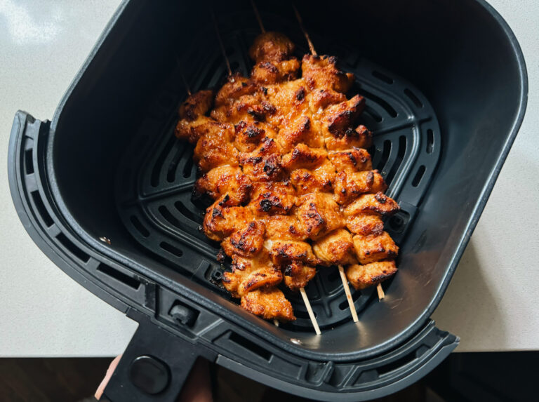

Honey Chipotle Chicken Skewers

ingredients:
- 1 pound chicken breasts
- 1/2 tablespoon honey
- 1 chipotle pepper in adobo, minced
- 1 clove garlic, grated
- 2 tablespoons taco seasoning (I like the Siete brand)
- 1 orange, zest and juice (1–2 teaspoons zest and 1 tablespoon juice)
- 1/2 teaspoon kosher salt
- 1 tablespoon avocado oil
cooking process:
- Soak: Soak the skewers in water for 15-30 minutes while you prep the chicken
- Mix: Using your hands or tongs, mix the chicken with the honey chipotle mix. It’ll look saucy and messy, in a good way.
- Skewers: Thread the chicken pieces onto skewers (usually I get 4 skewers with a pound of chicken).
- Cook Em Up: You can cook these a number of different ways – I air fry them at 400 degrees for 10 minutes or until internal temperature reaches 165 degrees. Grilling would also be amazing! Finish with a drizzle of honey, or (yum) 2 tablespoons of melted butter mixed with honey. It’s so good!